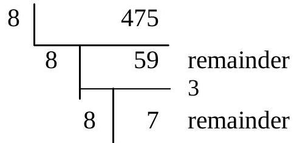
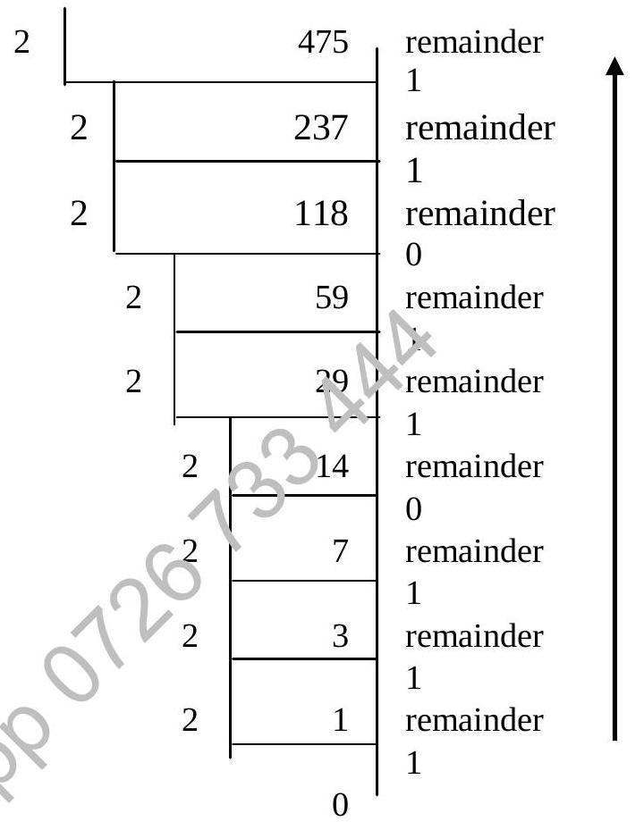
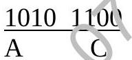
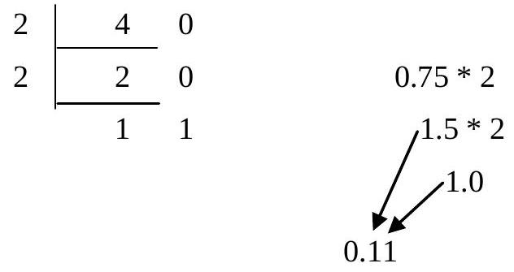
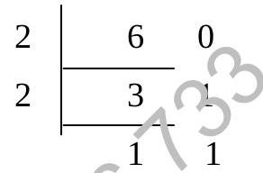

Chapter 1 : Number Bases
Chapter Objectives
At the completion of this chapter, you should be able to:
- identify the different types of numbers;
- convert between denary and other base;
- convert between binary, octal and hexadecimal;
- understand the column system and number bases;
- understand modular arithmetic;
- hexadecimal, octal addition.
1.1 Introduction
In this chapter, we start to explore arious sets of numbers which are used to represent data in real life problem. Namely, natural numbers, integers, rational, irrational, real and complex numıers. Numbers are used to represent quantities, measurement, and others in Gir surroundings. They are essential representations of data that will be processed by computer systems to produce useful information. The computer system, ysiing a digital electronic device, has to handle data in binary numbers.
In binary nurieers, each binary digit has only two states rather than ten states in decimal nuiniers. Therefore, binary, octal and hexadecimal number systems are dealt with in subsequent parts of the chapter.
1.1.1 Number Sets
| N | Natural Positive integers Example: 3, 71 |
| Z | Integers Whole numbers Example: 3, -71 |
| Q | Rational Real numbers which can be expressed as the ratio of 2 integer Example: 1/2, 0.57, -3 |
| F | Irrational Real numbers which are not rational Example: $\sqrt{2}, \pi$ |
| R | Real Can be represented by points a the straight line Example: -2.31, $\sqrt{5}, 6$ |
| C | Complex No real number that can satisfy the equation X2 = -1 Example: $\sqrt{-1}, \sqrt{-5.75}, \sqrt{-88}$ |
1.2 Level of Precisions
Some translator software have two levels of precisions in storing real numbers. Namely single-precision and double precision.
1.2.1 Single Precision
The real number is calculated to 8 and displayed to 7 significant figures.
Example: $\pi \quad = \quad 3.1415926$ calculated
= 3.141593 displayed
1.2.2 Double Precision
The computer will need longer processing time to produce double precision numbers. The real number is calculated to 16 and displayed on the screen to 15 significant figures.
Example: $\pi \quad = \quad 3.141592653589793$ calculated
= 3.14159265358979 displayed
1.3 Number Base
A fundamental counting group consists of a number various symbols.
| Counting Groups | Symbols of the Group | No. of Symbols |
|---|---|---|
| Binary | 0,1 | 2 |
| Octal | 0,1,2,3,4,5,7 | 8 |
| Hexadecimal | 0,1,2,3,$\cdots$,9, A, B, C, D, E, F | 16 |
| Denary | 0,1,2,3,4,5,6,7,8,9 | 10 |
1.4 Column System
Enable us th represent any conceivable number by combining numerals and zeros.
For e example, 423524 is derived from this column system:
| Column No | 6 | 5 | 4 | 3 | 2 | 1 |
|---|---|---|---|---|---|---|
| Value | 100,000 | 10,000 | 1,000 | 100 | 10 | 1 |
| Power of Magnification | $10^{5}$ | $10^{4}$ | $10^{3}$ | $10^{2}$ | $10^{1}$ | $10^{0}$ |
| Numerals | 4 | 2 | 3 | 5 | 2 | 4 |
The Power of Magnification for each individual column is derived as,
1.5 Conversion from Other Bases to Denary
We can use this column system to convert a number in other bases to its equivalence in Denary.
Example: Convert $111001_{2}$ to denary
| Column No | 6 | 5 | 4 | 3 | 2 | 1 |
|---|---|---|---|---|---|---|
| Value | 32 | 16 | 8 | 4 | 2 | 1 |
| Power of Magnification | $2^{5}$ | $2^{4}$ | $2^{3}$ | $2^{2}$ | $2^{1}$ | $2^{0}$ |
| Numerals | 1 | 1 | 1 | 0 | 0 | 1 |
Example: Convert $4BEEF8_{16}$ to denary
| Column No | 6 | 5 | 4 | 3 | 2 | 1 |
|---|---|---|---|---|---|---|
| Value | 1048576 | 65536 | 4096 | 256 | 16 | 1 |
| Power of Magnification | $16^{5}$ | $16^{4}$ | $16^{3}$ | $16^{2}$ | $16^{1}$ | $16^{0}$ |
| Numerals | 4 | B | E | E | F | 8 |
$4BEEF8_{16} = 4 \times 16^{5} + 11 \times 16^{4} + 14 \times 16^{3} + 14 \times 16^{2} + 15 \times 16^{1} + 8 \times 16^{0}$
1.6 Conversion from Denary to Other Bases
To convert a denary number to other bases, we do a repeated division by the desired base until a quotient 0 is obtained.
Example: Convert $475_{10}$ to octal
0 remainder 7
The octal number is obtained by reading the last integer 7 and upwards to include all remainders; $475_{10} = 733_{8}$
Example: Convert $475_{10}$ to binary
1.7 Conversion Among Other Base
We have illustrated the conversions between denary and other bases. How about converting a binary number to an octal number? Or, an octal number to a hexadecimal one?
1.7.1 Binary to Octal
We know that $9_{10} = 1001_{2}$ and $9_{10} = 11_{8}$ so, we can conclude that $1001_{2} = 11_{8}$. To convert a binary number to an octal number in this case will involve a lot of calculations.
Is there a better way to convert these numbers?
Yes. How many binary bits do we need to represent an octal digit?
| Binary | Octal |
|---|---|
| 000 | 0 |
| 001 | 1 |
| 010 | 2 |
| 011 | 3 |
| 100 | 4 |
| 101 | 5 |
| 110 | 6 |
| 111 | 7 |
No. of symbols in octal = $2^{\text{no. of binary bits}}$
We need three binary bits to represent symbols in octal! Likewise, one octal number will produce three binary bits.
To prove it, try whether $374_{8} = 011111100_{2}$?
1.7.2 Binary to Hexadecimal
Following the same argument, it is not so difficult to see why we need to have four binary bits to represent one hexadecimal numb
No. of symbols in Hexadecimal = $2^{\text{no. of binary bits}}$
Now can you see why $110101100_{2} = 1AC_{16}$?
0001 1010 1100
1 A C
1.7.3 Conversion Between Octal and Hexadecimal
Since every octal number will produce three binary bits, and every four binary bits will produce one hexadecimal number. We can make use of the binary base as the "conversion medium" to convert a hexadecimal number to an octal number or vice versa.
Example: Convert $733_{8}$ to a hex no.
Step 1. Convert $733_{8}$ to a binary number.
111 011 011
Step 2. Rearrange this binary number into 4-bit groups.
0001 1101 1011
Step 3. Convert this binary number to a hex.
1 D B
Hence, $733_{8} = 1DB_{16}$
1.8 Real Number
In real numbers, e.g. $(4.75)_{10}$, the 4 is an integer part while 0.75 is a fractional part. What is the way to convert 0.75 to a binary fraction? The method is to multiply 0.75 by 2 continuously until the fraction becomes zero or the degree of accuracy is satisfied.
$4.75 = 4 + 0.75 = (100)_{2} + (0.11)_{2} = (100.11)_{2}$
Let's look at another example.
$(6.1)_{10}$ to be converted to binary places.
$6.1 = 6 + 0.1 = (110)_{2} + (0.000110)_{2}$
$=(110.000110)_{2}$ correct to 6 binary places.
On the other hand, how can we convert $(110.000110)_{2}$ to denary real numbers?
Method:
- Write down the value of each bit (binary digit).
- Multiply the value by every bit.
- Take the sum of products.